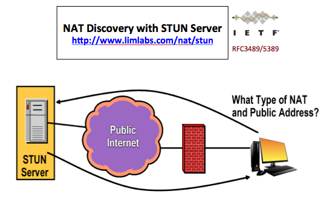
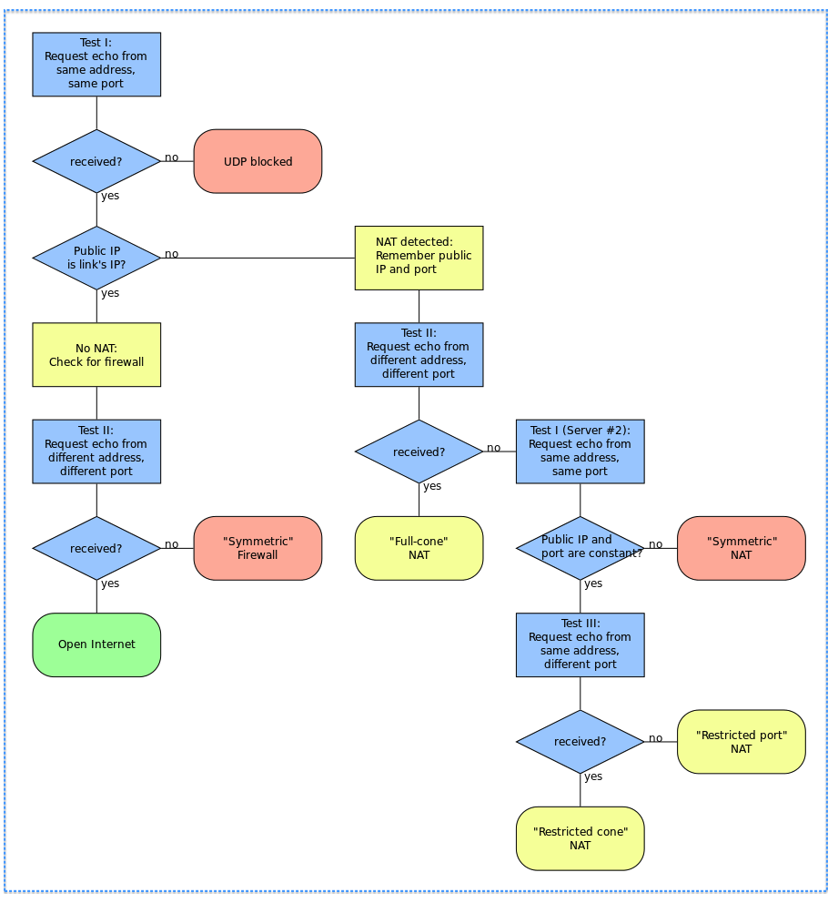
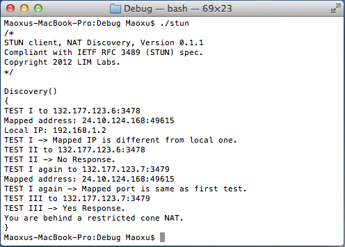

NAT discovery with STUN server
STUN (IETF RFC 3489/5389) is a protocol that allows two hosts to discover the presence and types of a NAT between them, and to find out what external IP address and port are to be replaced by the NAT. Based on address mapping and filtering behaviors of NAT, if exist, local address is classified into various types, which indicates the reachability of local host in peer-to-peer networking.
Work Flow
A classic algorithm consists of a series of tests is specified in RFC 3489/5389 to characterize NAT behavior according to the address and port mapping behavior. As shown below, when the path through the diagram ends in a red box, UDP communication is not possible and when the path ends in a yellow or green box, communication is possible.
Demo Program
This program is essentially a STUN client that follows the work flow in the RFC specifications for NAT discovery. It is a command line tool running on Windows, Mac OS X, and Linux. The underlying well-designed C++ classes can be used in your applications to parse STUN messages. By default, the program connects to a stun server, does the test sequence of NAT discovery, and reports the (NAT) type of your host address. You may find a copy of source code at Github. Below is a screenshot of the running program.
FAQ
Q: What type of server does the program works with?
A: The program works with a STUN server. It is currently compliant with IETF RFC 3489. The following version will support RFC 5389.
Q: It displayed "Permission denied" when I ran the program. How to resolve it?
A: This may occur when you downloaded pre-compiled binary for Mac OS X or Linux system. The reason is the file you downloaded lack of "execution" right. Please run "chmod 777 [filename]" first.
Q: Why did it report that I was behind a restricted cone NAT when I first ran the test, but reported a full cone NAT in the following tests?
A: You should be behind a restricted cone NAT, so in general, as in the first test, you can not receive a response from a changed IP and port. But then ppconfig send a request to the changed IP and port to determine the type of NAT. A hole is opened to the changed IP and port at this time and it will keep open for a period (typically 30 seconds). So in the following test, you can receive a response from a changed IP and port, and it seems that you are behind a full cone NAT. This issue occurred because STUN server reuses a same changed address for different tests. A workaround is doing second test after a long enough period (e.g. 30 seconds or longer).